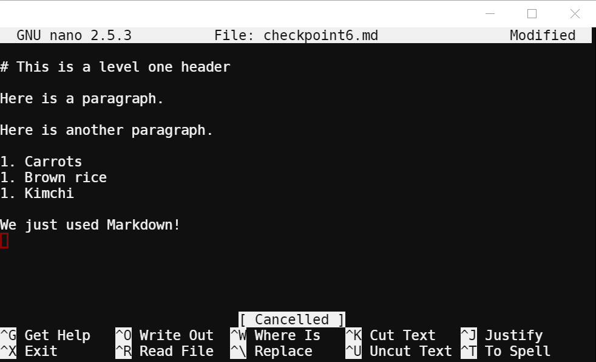

You'll need to use your PocketCHIP for this lesson. Find yours in the bin and make sure it powers on.
There are three ways to launch Nano. The first is launching it with only the nano command. The second is launching it and simultaneously creating a new file. The third is launching it and editing an existing file.
Open the terminal. Type nano without any arguments
or flags and press Enter. You should see this:
Close Nano by pressing Control-X. Now, type nano foo.md
and press Enter. You should see this:
You can see at the top of the terminal that the file name is listed. Type in a sentence or two and then close Nano by pressing Control-X. This time, Nano will ask you to confirm your changes by pressing Y, or discard them by pressing N. You can cancel by pressing Control-C. Save your changes and confirm the filename by pressing Enter.
Now type nano foo.md and press Enter. You should
see the same file again. Add a new line at the bottom of the file
and type I've completed Checkpoint 1. The close the file by
pressing Control-X. Press Y, but this time change the name of the
file to checkpoint1.md before you press Enter.
Stream the contents of the new file to your terminal using cat
and then raise your hand.
Raise your hand and have Mr. Olinda verify this checkpoint.
Open foo.md in nano and delete all the text inside.
Then press Control-O to save the file without closing it. If
you've done this correctly, your screen should look like this:
Raise your hand and have Mr. Olinda verify this checkpoint.
You should still have foo.md open from the last
checkpoint. If not, open it now. Then press Control-R to read
another file and insert it into the current file. Type in checkpoint1.md
when it prompts you and press Enter. Now foo.md
contains the exact contents of checkpoint1.md.
What happens if you run this command on a file that's not empty?
Go ahead and exit Nano, and be sure to save your changes.
Raise your hand and have Mr. Olinda verify this checkpoint.
Open Nano and press Control-G. This takes you to the manual for
the program if you ever need to reference it while you're working.
Skim through the whole file before moving on.
Raise your hand and have Mr. Olinda verify this checkpoint.
Type the following, including blank lines, into a new file called
checkpoint5.md:
Now, move your cursor to the beginning of one of the numbered lines using the arrow keys. Press Control-K to cut the line. Then move your cursor somewhere else in the list and press Control-U to uncut (paste) the text in. Try this in other places until you're comfortable, and then move everything back to the original layout.
Then press Alt-A (Alt is the Meta key in Nano) to start
highlighting, and then use the arrow keys to move around and
highlight text. Then press Alt-6 to copy the highlighted text. Go
ahead and paste it somewhere else. Then remove the extra text
using Control-K until the file looks like the original. Exit and
save.
Raise your hand and have Mr. Olinda verify this checkpoint.
Open a new file in nano called checkpoint6.md and use Control-R to read the contents of checkpoint5.md into it. Then save the file. Now, press Control-W and find the word "rice" in the file. You'll notice that once you press Enter the cursor moves to the beginning of the word you searched for. Try this with several different words.
Now use Control-\ to search for a word and then replace it. In this case, we will search for the word "Rice" and replace it with the words "Brown rice". Try doing this with several other words.
Now do a search for the word "Here" and replace it with "There". But this time, instead of just confirming the change, we want to press A to change all occurrences of "Here" at the same time.
Notice that your last search is saved every time you search, so
you can just press enter to do the same search again. Then save
and exit.
Raise your hand and have Mr. Olinda verify this checkpoint.
Now that you have tried the basics of Nano and Vim, you should be prepared to handle working with text on almost any Linux or Unix machine, even if it doesn't come with a graphical user interface. Turn in your checkpoint sheet to the assignment basket once it is completely signed. You may now work on stretch projects.